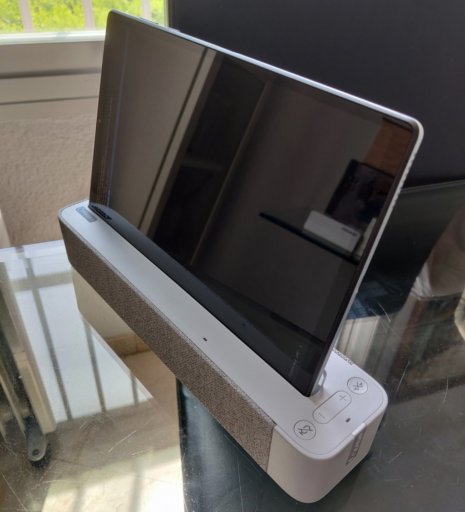

Lenovo Tab M10 FHD Plus (lenovo tbx606)
|
 TB-X606FA Tablet docked in it's Alexa speaker dock. | |
| Manufacturer | Lenovo |
|---|---|
| Name | Tab 10 FHD Plus 2nd Gen |
| Codename | lenovo-tbx606 |
| Released | 2020 |
| Category | testing |
| Original software | Android 9 |
| Hardware | |
| Chipset | MediaTek MT8768 (Helio P22T) |
| CPU | 8x 1.8/2.30GHz Cortex-A53 |
| GPU | PowerVR Rogue GE8320 @ 650MHz (OpenGL ES 3.2) |
| Display | 10.3" 1920x1200 TDDI 330nits |
| Storage | 64GB eMMC |
| Memory | 4GB LPDDR4X 3200MHz |
| Architecture | aarch64 |
{kind=link}
| USB Networking | |
|---|---|
| Flashing | |
| Touchscreen | |
| Display | |
| WiFi | |
| FDE | |
| Mainline | |
| Battery | |
| 3D Acceleration | |
| Audio | |
| Bluetooth | |
| Camera | |
| GPS | |
| Mobile data | |
| SMS | |
| Calls | |
| USB OTG | |
| NFC | |
| Accelerometer | |
|---|---|
| Magnetometer | |
| Ambient Light | |
| Proximity | |
| Hall Effect | |
| Ir TX | |
|---|---|
| TrustZone | |
The Lenovo Tab M10 FHD Plus is a series of tablets sold also intended to be used as voice assistant screen hybrids called Smart Tab M10 FHD Plus. This is the second generation of the M10 FHD tablet (called M10 FHD Plus) and uses Mediatek processors.
| This 4/64GB tablet is sold alone (P/N ZA6M0009US), with a docking station intended to be used with Google Assistant (P/N ZA5W0146US) and with a speaker base with an Alexa Show Mode (Model TB-X606FA, P/N ZA6M0009US). AFAIK, the hardware between those versions is mostly the same. Software isn't.
However, 2GB RAM models also exist. The TB-X606FA Alexa Base connects to the device via just two pogo pins (thus providing charging only) and is connected via Bluetooth exposing two devices called 'Lenovo Smart Dock xxxxxx'. One acts as a Bluetooth A2DP/HSP sink (TODO: codecs and get Source working in Pulseaudio). The other device exposes a bunch of (unknown) Bluetooth services. The efforts for this tablet will most likely be of great use in porting the Lenovo Tab M8 FHD (Lenovo TB-8705), which shares the same SOC.
|
Contributors
Users owning this device
- Comcloudway (Notes: rooted)
- Jiël (Notes: Beta test)
- Rgon (Notes: First attempt at porting to pmos!)
- Zephyr1112 (Notes: Android 10 (Stock), 4/64GB - X606F - no longer hardbricked)
How to enter flash mode
NOTES: Unofficial TWRP is available for this device. Bootloader unlocking:
- Enable Developer Options (Android Settings -> System -> About -> Build Number (press 7 times)
- Turn on OEM Unlocking and USB Debugging in Android Settings -> System -> Developer Options
- Connect tablet to computer, press
Allow USB Debuggingon the popup that will appear on the tablet. $ adb reboot bootloader-
$ fastboot flashing unlockWipes data! - Follow the instructions on the tablet and reboot to Android for the wipe to complete.
Entering the bootloader:
- Hold
Vol Down + Poweruntil the tablet vibrates to enter fastboot mode.
Enable installing unverified packages (specific to mediatek devices/Android Verified Boot): either flash an empty vbmeta package
fastboot --disable-verification flash vbmeta vbmeta.img
TODO: provide vbmeta.img or create a custom signed vbmeta.img for your partitions.
Then install your package (after vbmeta):
fastboot flash whatToFlash imageSrc
Installation
TODO: pmbootstrap flasher flash_kernel causes bootloop.
The device shows the 'Lenovo' splash screen, appears as the usb device: ID 0e8d:2000 MediaTek Inc. MT65xx Preloader, which shortly disappears and reboots.
Serial Console
The device's main board has two exposed POGO pins labelled TX and RX which expose the SOC's 1.8V UART (voltage level checked with oscilloscope). CH340G USB-TTL 3.3V (RX only) confirmed working. Upon charger connected/fastboot reboot, the device prints the following (115200 baud):
| Boot serial output: |
<< garbage >>
F0: 102B 0000
F3: 0000 0000 [0200]
V0: 0000 0000 [0001]
00: 0000 0000
BP: 0800 0041 [0000]
G0: 0090 0000
EC: 0000 0000 [4001]
CC: 0000 0000 [0005]
T0: 0000 010B [000F]
Jump to BL
<< garbage >> |
The << garbage >> found afterwards is data at (921600) baud. Here's an excerpt after calling fastboot reboot:
| Boot serial output @921600n1: |
#T#PWRAP=9
DATE_CODE_YY:2, DATE_CODE_WW:1
[SegCode] Segment Code:0x8, PROJECT_CODE:0x0, FAB_CODE:0x2, RW_STA:0x0, CTL:0x0, DCM:0x4
[HT22] : 1 0x4 0x4 done
0:0x88000000, 1:0x1100, 2:0x1, 3:0x110003, 4:0x40000000, STA:0x0, S:0x4, FAB0:0x8768, FAB11:0x0
A:0x0, B:0x3F, C:0x40, D:0x1F, E:0x1, F:0x3, G:0x2
#T#I2C=3
[PMIC]Preloader Start
[PMIC]MT6357 CHIP Code = 0x5730
[PMIC]POWER_HOLD :0x1
<< ... >> |
Android Verified Boot Notice
Every time fastboot is loaded, and either fastboot flash boot bootimg.img or fastboot boot bootimg.img is called, an empty vbmeta image must be flashed previously!! You can do so with pmbootstrap flasher flash_vbmeta as a first command every time you open fastboot. If not, the kernel will not be loaded and instead, you'll get the following undescriptive messages in the serial console, and no kernel logs whatsoever:
| Locked AVB Serial output: |
[ATF](0)[1363.555865]INFO: #@# spm_config_spmfw_base(1052) spm_base_addr 0x77ff0000, spm_base_size 0x10000
[ATF](0)[1363.557062]INFO: #@# spm_load_pcm_firmware(155) use spmfw partition for pcm_allinone_lp4_term_3200.bin - allinone_lp4_term_3200_v7.2.4
[ATF](0)[1363.558654]INFO: #@# spm_load_pcm_firmware(155) use spmfw partition for pcm_allinone_lp4_3200.bin - allinone_lp4_3200_v7.2.4
[ATF](0)[1363.560151]INFO: #@# spm_load_pcm_firmware(155) use spmfw partition for pcm_allinone_lp3_1866.bin - allinone_lp3_1866_v7.2.4
[ATF](0)[1363.561648]INFO: #@# spm_load_pcm_firmware(155) use spmfw partition for pcm_allinone_lp4_term_2400.bin - allinone_lp4_term_2400_v7.2.4
[ATF](0)[1363.563252]INFO: #@# spm_load_pcm_firmware(155) use spmfw partition for pcm_allinone_lp4_2400.bin - allinone_lp4_2400_v7.2.4
[ATF](0)[1373.555200]INFO: aee_wdt_dump: on cpu0
[ATF](0)[1373.555756]INFO: (0) pc:<0000000048036de4> lr:<0000000000000000> sp:<0000000048100100> pstate=60000173
[ATF](0)[1373.557016]INFO: (0) x29: 00000000480bd000 x28: 0000000000000000 x27: 0000000000000000
[ATF](0)[1373.558104]INFO: (0) x26: 0000000000000000 x25: 0000000000000000 x24: 0000000000000000
[ATF](0)[1373.559191]INFO: (0) x23: 00000000480bd000 x22: 0000000000000000 x21: 00000000480bd000
[ATF](0)[1373.560279]INFO: (0) x20: 0000000000000000 x19: 0000000048100100 x18: 0000000048036de5
[ATF](0)[1373.561367]INFO: (0) x17: 00000000480be574 x16: 0000000048036de8 x15: 0000000000000000
[ATF](0)[1373.562455]INFO: (0) x14: 0000000000000000 x13: 0000000000000000 x12: 00000000481000f4
[ATF](0)[1373.563542]INFO: (0) x11: 00000000480cba78 x10: 0000000047c90000 x09: 000000000000000e
[ATF](0)[1373.564630]INFO: (0) x08: 0000000048082820 x07: 0000000000000000 x06: 0000000000600000
[ATF](0)[1373.565718]INFO: (0) x05: 0000000000000000 x04: 00000000480ccef4 x03: 00000000000051ac
[ATF](0)[1373.566805]INFO: (0) x02: 00000000000263c5 x01: 000000000010e70c x00: 000000000000003a |
Boot Debugging
The device will not boot and will enter a bootloop. However, reading the serial terminal, we can diagnose the output of fastboot oem p2u on && fastboot boot '/tmp/postmarketOS-export/boot.img-lenovo-x606fa'. The system enter a kernel panic and the MTK WDT reboots the device back to fastboot mode. These lines before the panic might shed some light:
| Pre-panic output: |
The previous error has been successfully solved with the following defconfig options:
# CONFIG_MTK_DYNAMIC_FPS_FRAMEWORK_SUPPORT is not set
# CONFIG_MTK_FPSGO is not setAccidental Bricking
During the development process, I've managed to dead-brick or black-screen-brick the device several times. The device will not show any signs of life other than it vibrating on the constant reboots. There is no way to access fastboot in this bricked state. Serial output shows the preloader tries to load the bootloader but stops at [ATF](0)[5.261232]NOTICE: ['A] CPU[0] IRQ[171][ATF](0)[5.261720]NOTICE: enter(15340998846)[ATF](0)[5.262204]NOTICE: quit(15354769923), causing aee_wdt_dump. Little Kernel doesn't seem to run in such case.
Probable cause:
Trying to fastboot boot bootimg.img with an erased boot partition.
| Commands that cause hard-brick in a reproducible manner: |
fastboot format userdata
fastboot format system
fastboot erase boot
fastboot oem p2u on
fastboot format cache
fastboot flash system '/tmp/postmarketOS-export/lenovo-x606fa.img'
fastboot boot '/tmp/postmarketOS-export/boot.img-lenovo-x606fa'
|
However, simply adding fastboot flash boot '/tmp/postmarketOS-export/boot.img-lenovo-x606fa' so the boot partition isn't empty (or not erasing it in the first place) guarantees that your non-booting kernel does not brick your device that easily.
Solution:
Use SP-Flash-Tool to re-flash the vendor's ROM. The fastest route is probably using Lenovo LMSA on a sepparate Windows (unfortunately) machine and reflash using the MTK Preloader. Just follow the LMSA instructions and plug the (in rebooting condition) Tablet while pressing Volume UP. No need to try to turn it off nor disconnect the (internal) battery, since it's already in a preloader loop.
Issues stifling development
-
TWRP install not persistingSolved by installing vbmeta.img before (and after?) the recovery image. -
pmbootstrap flasher flash_rootfsthrows errorInvalid sparse file format at header magicand keeps transferring the data.
Note: even though no further errors pop up, after calling this command, TWRP throws the following errors: Faled to mount '/system_root' (Invalid-argument).
Wiping the "System" partition on TWRP fixes the issue, and reflashing pmOS brings it back up.
So it seems that the partition is not being correctly written by flash_rootfs
-
pmbootstrap flasher flash_rootfsfollowed bypmbootstrap flasher bootreboots to fastboot. -
pmbootstrap flasher flash_kerneldoes not throw errors -
pmbootstrap install --no-fde --android-recovery-zippmbootstrap exportand usingadb push mos-lenovo-x606fa.zip /sdcard/to later "Install Zip" is impossible if we don't _Wipe_system(anddata,cachefor good measure). After flashing the exported.zip,/system_rootis once again mountable (containing just thelost+founddir, butDatais no longer mountable).
See also
The open source kernel code for the models: TB-X606X, TB-X606F (buildable, and containing a defconfig for the board) can be found in Lenovo's Open Source portal, with the filename tab_m10_fhd_plus_opensource_tb-x606m_s000213_200302_bmain.tgz, sha256sum: aab720c250f05a5b4ae618ecf8350978428446ad14b1f8ed8b01b0582205a12c.
The board name appears to be achilles6_row_wifi, as is the provided kernel source's defconfig filename. Note: the extracted working TWRP's defconfig file is called achilles6_row_wifi_alexa, so the TB-X606FA version might in fact be different.
Mainlining
This SOC mt8768 seems to be mostly the same as the mt6765, since in the Lenovo provided kernel, the name mt6765 (Helio P35) appears in many places, substituting this tablet's SOC name.
NOT VERIFIED sourced from deviceinfohw
| Hardware type | Chip | Mainline status |
| WiFi chip | ? | ? |
| Charging IC | bq2560x | ? |
| Fuel gauge | ? | ? |
| GNSS | N/A | - |
| NFC | N/A | - |
| Proximity sensor | ltr578_l | ? |
| Accelerometer | Bosch bma253 | - |
| Touchscreen | ? | fts_ts driver |
| Display panel | BOE TV103WUM-LL1 | Generic Driver Used |